One VisionHOPE-small backbone with self-referential memory reads a head CT as a bag of axial slices and reports the hemorrhage type, midline shift in millimetres, basal-cistern status, an approximate lesion volume, a Marshall CT score and Grad-CAM evidence for each finding.
Radiologist reports give only scan-level labels: which hemorrhage types are present, the midline shift, the state of the basal cisterns and the Marshall CT category, but never where on which slice. We treat every scan as a bag of axial slices and train a VisionHOPE encoder end-to-end with gated attention multiple-instance learning, one attention map per output. Skull-base and vertex slices, which the first model attended to, are removed by an anatomy-aware trim, and the basal cisterns are read from their own slice window inside the same model. The final model, VisionHOPE-small trained on all 23 outputs with its self-referential memories given their own learning rate, reaches macro AUROC 0.883 and AUPRC 0.786 for EDH, SDH, tSAH, IVH and contusion on held-out patients, up from 0.844 and 0.729 for the first model. It detects midline shift above 5 mm with AUROC 0.94 and estimates shifted scans within 2.8 mm, and its outputs combined by the Marshall guideline agree with the radiologist score with quadratic kappa 0.58. A single tool turns a NIfTI file into a structured report with Grad-CAM images. None of this is clinically validated.
The cohort is every pre-surgery head CT in the institutional TBI registry with a matching NIfTI volume: 9,431 scans from 3,598 patients after excluding post-operative studies, orientation failures, reformats and 32 duplicated files. Splits are by patient (train 6,608 scans, validation 1,406, test 1,417), so serial CTs of one patient never cross splits. Every test number below comes from patients the models never saw, and every model was compared on the same patients.
Each CT row in the label sheet carries the five hemorrhage types (EDH, SDH, traumatic SAH, IVH, contusion), the midline shift in millimetres, a 4-level cistern grade (codes 2 and 3 merged into “effaced” because code 3 is rare), the Marshall CT category, mass effect, herniation, edema, hydrocephalus, skull fracture, and the side of each SDH, EDH and contusion. No slice-level or voxel-level annotation exists.
| Marshall category | I | II | III | IV | V | VI |
|---|---|---|---|---|---|---|
| Scans in cohort | 1,494 | 5,929 | 1,012 | 335 | 10 | 651 |
Each volume is reoriented from its affine, the shortest axis is taken as the axial stack, and an intracranial mask is built per slice from the closed skull ring. Three CT windows (brain 40/80, subdural 80/200, stroke 40/40) are applied inside a 6 mm dilated mask, cropped square around the cranium and stored at 256 px. A small orientation CNN fixes rotated scans; it was retrained on thumbnails taken low in the trimmed stack because the skull base, its strongest cue, is no longer there.
The first model attended to petrous, orbital and sphenoid slices and to tiny vertex caps, and its Grad-CAM lit up the black background. Slices are now selected by anatomy. From the inferior end, a slice is dropped while its intracranial area is below 45 % of the scan's largest slice or the bone inside the convex hull of the intracranial mask exceeds 2 % of that area (petrous ridges, clivus, sphenoid and orbital roofs lie there; the calvarial ring does not). From the vertex, slices below 25 % of the maximum area are dropped. At most 40 % of a scan is removed. The median scan keeps 17 of 21 slices. The basal cisterns sit exactly in the region this removes, so they get their own window: 15 mm below to 25 mm above the trim line.
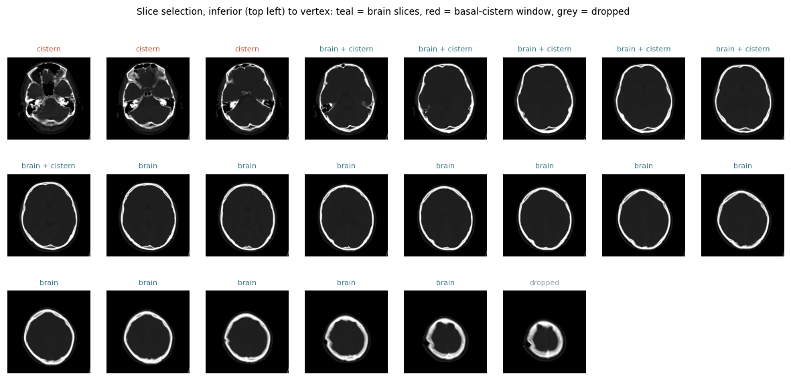
Encoder. VisionHOPE is a hierarchical vision backbone whose blocks contain self-referential nested learning (SRNL) operators: small associative memories (M_m, M_v, M_k, M_eta, M_alpha) whose state is rewritten as the sequence is read, so the block modifies its own key-value mapping on the fly. Each axial slice passes through the encoder and becomes a 1,024-dimensional feature vector. The final model uses VisionHOPE-small: 51.9 M encoder parameters, 1.36 M of them SRNL memories (VisionHOPE-tiny, used by the earlier models, has 25.6 M and 0.74 M). Training starts from ImageNet weights; BatchNorm statistics stay frozen because bags are small.
Bag head. The slice features are projected to 256 dimensions, and an SRNL layer runs over the slice sequence so that slices can inform each other (continuity of a hematoma, the septum level for midline shift). A gated attention MIL head (Ilse et al., 2018) then pools the slices separately for every output: each of the 23 outputs has its own attention map over slices and its own linear read-out. The attention weights are the slice-level evidence; Grad-CAM on the last encoder stage gives the in-slice evidence.
Two slice groups, one pass. Both slice groups of a scan go through the encoder together, about 25 slices per scan. The two cistern outputs may attend only to the cistern window; every other output only to the brain slices. This keeps skull-base slices out of the hemorrhage evidence while the cistern heads still see the cisterns.
flowchart LR A[NIfTI head CT] --> B[reorient, intracranial mask, 3 CT windows] B --> C[brain slices: anatomic trim] B --> D[basal-cistern slices: 15 mm below to 25 mm above trim line] C --> E[VisionHOPE-small encoder with SRNL memories, one pass] D --> E E --> F[slice features 1024-d, projection 256-d, SRNL over slice sequence] F --> G[per-output gated attention MIL, 23 attention maps] G --> H[5 hemorrhage types] G --> I[midline shift: mm, more than 0, more than 5 mm] G --> J[cisterns: compressed, effaced] G --> K[Marshall II and VI, mass effect, edema, herniation, laterality] B --> L[HU lesion volume] H --> M[Marshall rule fitted on validation] I --> M J --> M K --> M L --> M M --> N[structured JSON report and Grad-CAM]
| Output group | Outputs | Loss |
|---|---|---|
| Hemorrhage type | EDH, SDH, tSAH, IVH, contusion, plus “any hemorrhage” | asymmetric loss |
| Midline shift | mm (regression), > 0 mm, > 5 mm | smooth-L1 (shifted scans 5×), BCE |
| Cisterns | compressed or worse, effaced | BCE |
| Marshall components | any pathology (≥ II), large lesion (VI) | BCE |
| Other findings | mass effect, herniation, edema, hydrocephalus, skull fracture | BCE |
| Laterality | SDH, EDH and contusion, right and left | BCE |
Augmentation is rotation, scale, translation, contrast, brightness and noise without flips, because left and right carry meaning. Gradients are accumulated to 16 scans per step with gradient checkpointing on the 8 GB GPU. An exponential moving average of the weights is evaluated each epoch on the validation patients, and the checkpoint with the best validation score (class AUPRC plus task AUPRC) is kept.
| Run | Encoder | Starts from | Slices | Outputs | Epochs | Learning rate (encoder / head) |
|---|---|---|---|---|---|---|
| e2e_vh | VisionHOPE-tiny | ImageNet + head on frozen features | original trim | 5 types | 12 | 1e-5 / 1e-4 |
| e2e_vh_ft | tiny | e2e_vh | anatomic trim | 5 types | 8 | 5e-6 / 3e-5 |
| e2e_vh_mt | tiny | e2e_vh_ft | anatomic trim | 23 outputs | 7 | 5e-6 / 1e-4 |
| cistern_vh | tiny | e2e_vh_mt | cistern window | 23 (cistern heads used) | 8 | 5e-6 / 5e-5 |
| vh_small_final | VisionHOPE-small | ImageNet | brain + cistern groups | 23 outputs | 1 frozen + 8 | 1e-5, SRNL 5e-5 / 2e-4 |
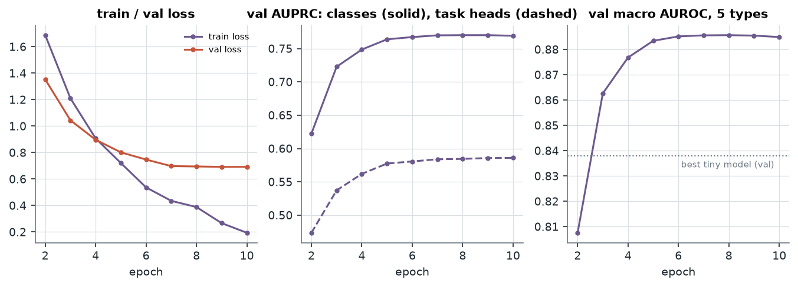
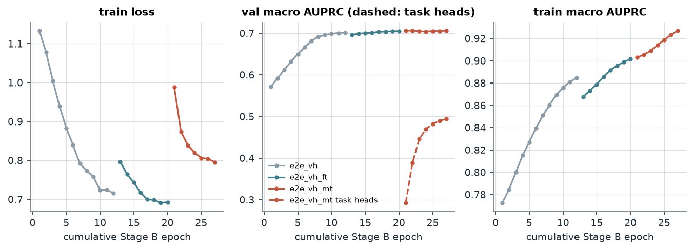
In the tiny-model runs the SRNL memories moved 0.06 % per run, a third of the rest of the encoder and up to 75 times less than the attention head: at the shared encoder learning rate the self-modifying part was close to frozen. The final run gave the SRNL memories 5× the encoder learning rate. They then moved 1.24 %, more than the rest of the encoder (0.81 %) and 20 times more than before (Figure 4). The comparison is not entirely like for like: the final run starts from ImageNet weights rather than from a CT-trained model, so every part has more to learn.
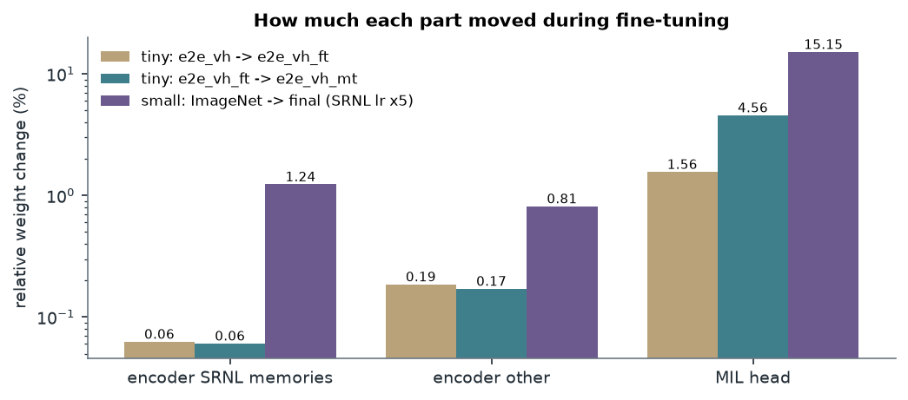
| Model (test, 1,417 scans) | EDH | SDH | tSAH | IVH | Contusion | Macro AUROC [95 % CI] | Macro AUPRC [95 % CI] |
|---|---|---|---|---|---|---|---|
| e2e_vh, original slices | 0.809 | 0.876 | 0.846 | 0.847 | 0.842 | 0.844 [0.82, 0.86] | 0.729 [0.69, 0.76] |
| e2e_vh weights, new slices | 0.813 | 0.878 | 0.835 | 0.821 | 0.831 | 0.835 [0.82, 0.85] | 0.722 [0.68, 0.75] |
| e2e_vh_ft | 0.810 | 0.875 | 0.836 | 0.846 | 0.832 | 0.840 [0.82, 0.86] | 0.734 [0.69, 0.77] |
| e2e_vh_mt (multi-task) | 0.806 | 0.870 | 0.835 | 0.858 | 0.828 | 0.840 [0.82, 0.86] | 0.737 [0.70, 0.77] |
| VisionHOPE-small (final) | 0.837 | 0.894 | 0.903 | 0.915 | 0.863 | 0.883 [0.87, 0.90] | 0.786 [0.75, 0.81] |
| Final model, test | EDH | SDH | tSAH | IVH | Contusion | Macro |
|---|---|---|---|---|---|---|
| Recall | 0.47 | 0.76 | 0.67 | 0.67 | 0.75 | 0.67 |
| Specificity | 0.95 | 0.88 | 0.91 | 0.97 | 0.80 | 0.90 |
| Precision | 0.64 | 0.73 | 0.75 | 0.72 | 0.82 | 0.73 |
| Balanced accuracy | 0.71 | 0.82 | 0.79 | 0.82 | 0.78 | 0.78 |
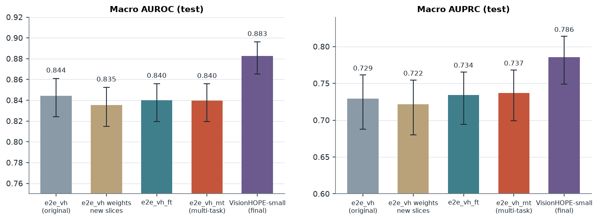
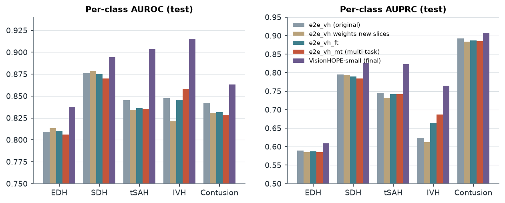
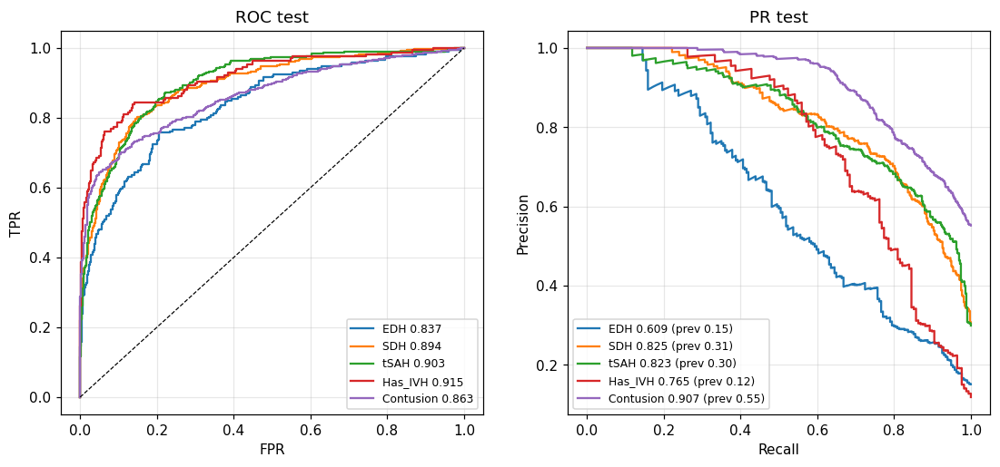
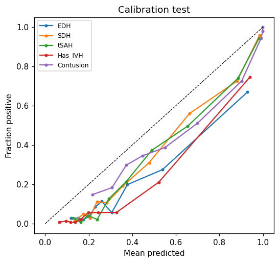
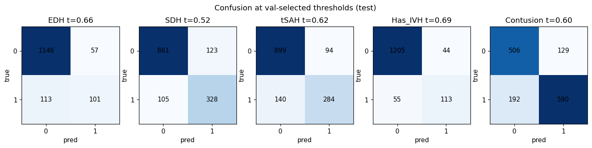
Each gallery row is one validation scan: its four most-attended slices for the class with the Grad-CAM map overlaid, labelled true positive, false positive or false negative. Before the slice fix, false positives often rested on posterior-fossa and petrous slices and the map spread over the background. After it, attention stays on brain slices and the map stays inside the skull, often on the hematoma itself.
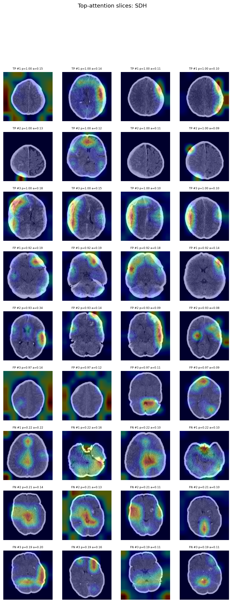
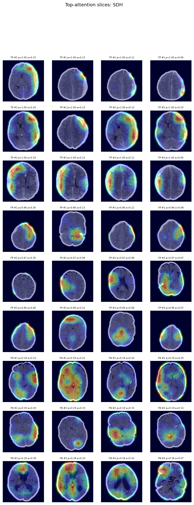
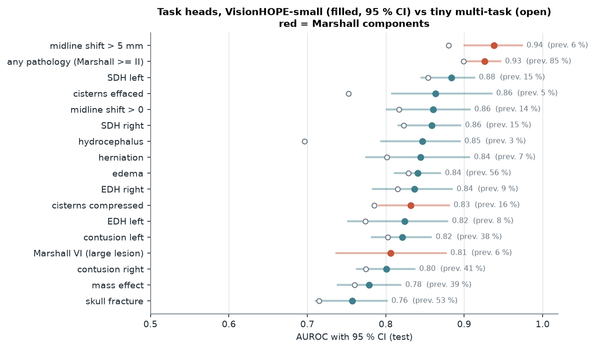
| Output (test AUROC) | Tiny multi-task | Final model |
|---|---|---|
| Midline shift > 5 mm | 0.880 | 0.938 |
| Midline shift > 0 | 0.817 | 0.861 |
| Cisterns compressed or worse | 0.785 | 0.832 |
| Cisterns effaced | 0.753 | 0.864 |
| Any pathology (Marshall ≥ II) | 0.899 | 0.926 |
| Hydrocephalus | 0.696 | 0.847 |
| Herniation | 0.802 | 0.845 |
| SDH right / left | 0.823 / 0.854 | 0.859 / 0.884 |
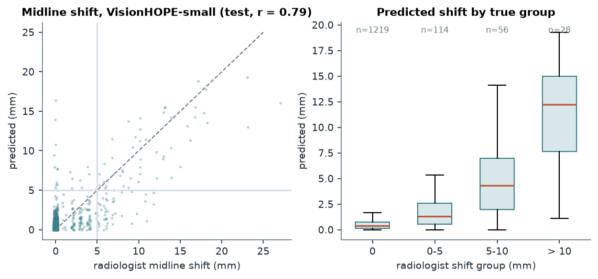
No voxel masks exist, so lesion volume is measured from the image: voxels at least 20 HU brighter than the median brain of their slice and within 50–95 HU, excluding a 1.5 mm band along the bone and calcifications, grouped into 3D components of at least 0.2 cm³. The volume ranks scans by severity and finds the side of a unilateral SDH in 80–84 % of cases. It counts only hyperdense blood, so mixed-density lesions are underestimated, and it is used as an input to the Marshall VI decision rather than as a measurement on its own.
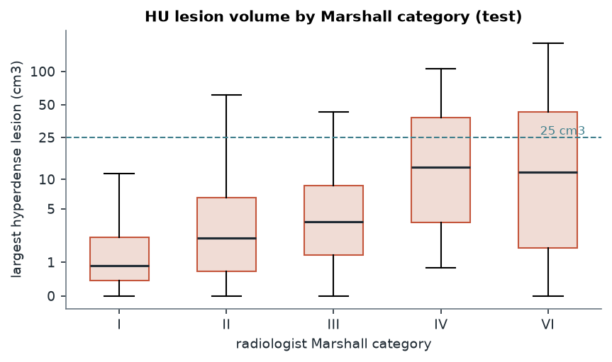
Applied to the radiologist's own component labels, the guideline rule (VI if large lesion, else IV if shift above 5 mm, else III if cisterns compressed, else II if any pathology, else I) reproduces their Marshall score in 99 % of scans, so the decomposition is sound and the remaining error comes from the component predictions. The four rule thresholds are fitted together on validation to maximise quadratic kappa and then frozen.
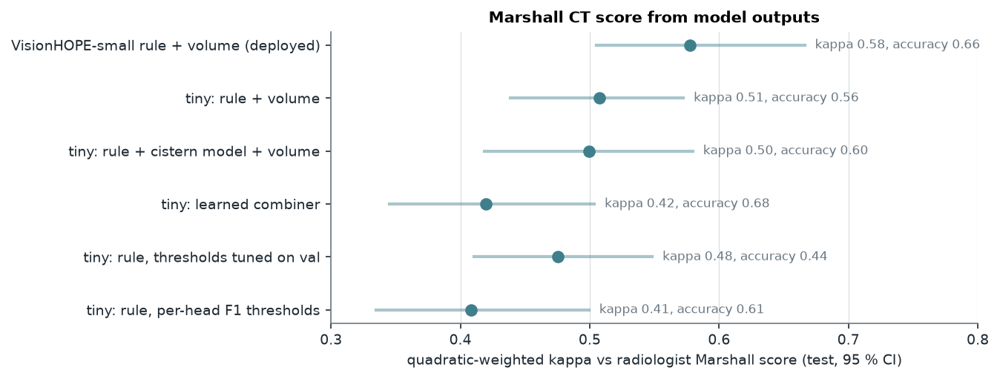
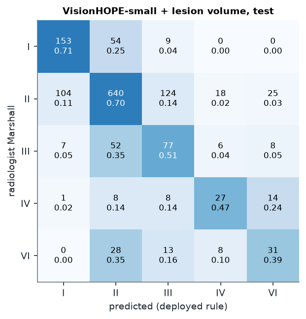
predict_scan.py takes one NIfTI file and runs the full chain: header check, both slice selections, orientation fix, model, lesion volume, the Marshall rule with the thresholds saved from validation, and Grad-CAM for every positive finding on its most-attended slices. The output is a JSON report and one image per finding. Below is an abridged report for a test scan the radiologist read as SDH with contusion, 18 mm shift, compressed cisterns, Marshall VI.
{
"model": "vh_small_final", "encoder": "visionhope_small",
"hemorrhage": {
"EDH": {"probability": 0.0995, "present": false},
"SDH": {"probability": 0.9981, "present": true},
"tSAH": {"probability": 0.4741, "present": false},
"Has_IVH": {"probability": 0.3653, "present": false},
"Contusion": {"probability": 0.906, "present": true}
},
"midline_shift": {"mm": 17.8, "probability_gt_5mm": 0.9958, "category": ">5 mm"},
"cisterns": {"status": "compressed", "probability_compressed_or_worse": 0.8544, "probability_effaced": 0.2592},
"lesion_volume": {"total_cm3": 97.9, "largest_cm3": 96.6, "extra_axial_cm3": 97.9,
"patient_right_cm3": 96.8, "patient_left_cm3": 1.1},
"marshall_ct": {"category": "VI"},
"gradcam": {"SDH": "gradcam_SDH.png", "mls_gt5": "gradcam_mls_gt5.png", "...": "..."},
"disclaimer": "Research model; not a medical device and not clinically validated."
}
On this scan the report matches the radiologist on every reported finding, including the 18 mm shift (17.8 mm) and the compressed cisterns; the tiny model had added a false tSAH, called the cisterns effaced and given 11 mm. Two outputs are still off: the SDH laterality heads lean slightly to the left (0.77 vs 0.64) although the lesion volume puts 97 cm³ on the right, and hydrocephalus is flagged at a low calibrated threshold.
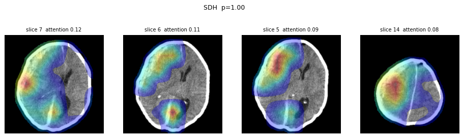
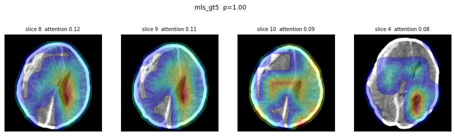
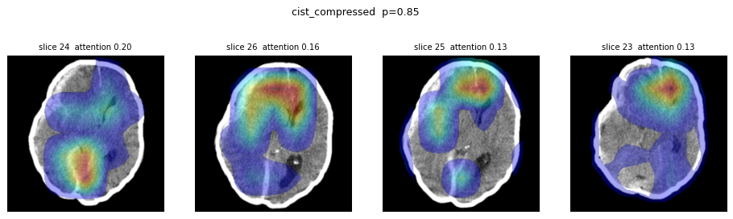
All commands run in WSL2 under env_wsl.sh; data and outputs live on the D: drive.
bash scripts/rebuild_data_wsl.sh # slice cache, orientation, patient splits bash scripts/cistern_pipeline_wsl.sh # lesion volumes, cistern-window cache (also trains cistern_vh) bash scripts/train_small_wsl.sh # VisionHOPE-small, all outputs, both slice groups bash scripts/train_small_resume_wsl.sh # resume, pick best checkpoint, evaluate, calibrate -> vh_small_final python predict_scan.py scan.nii.gz --out reports/ python scripts/make_article_figures.py && python scripts/bundle_article.py